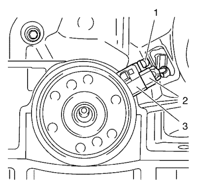
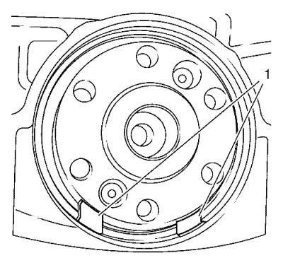
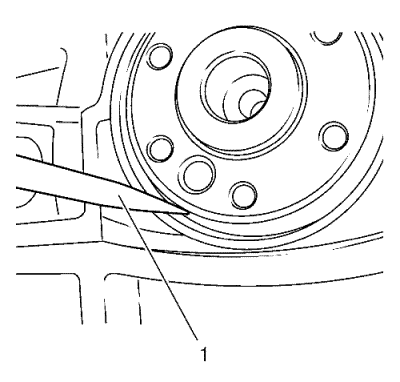
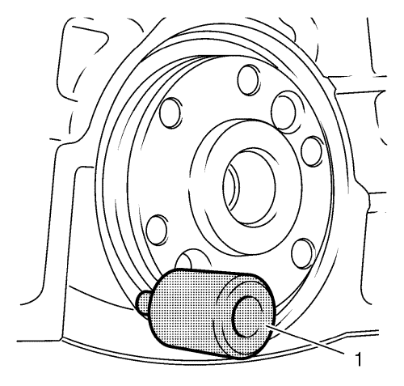
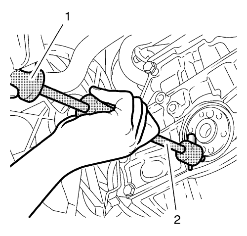

Información de servicio
Atención: No permita que la rueda del codificador del cigüeñal entre en contacto con campos magnéticos externos u objetos metálicos afilados. No deje caer la rueda de codificador del cigüeñal. No dañe la pista de goma del codificador. Si no se siguen estas precuaciones, pueden producirse daños en el componente.
- Retire el tornillo (1) del sensor de posición del cigüeñal.
- Desmonte el sensor de posición del cigüeñal (2) de la carcasa del retén de aceite trasero del cigüeñal.
- Extraiga el alojamiento de sello de aceite trasero del cigüeñal (3).

Nota:
| • | Haga únicamente un orificio en las posiciones correspondientes a las 5 y a las 7 en punto (1), ya que estas son las únicas posiciones donde hay una cavidad detrás del anillo de junta. |
| • | El diámetro del orificio no debe sobrepasar los 2 mm (0,0787 pulg.). Si el diámetro del orificio sobrepasa los 2 mm (0,0787 pulg.), el tornillo del extractor EN-6624 no podrá agarrarse. |

- Con la herramienta adecuada, por ejemplo un trazador (1), haga un orificio en el retén de aceite trasero del cigüeñal.
Posicione el trazador (1) en el extremo exterior del retén de aceite trasero del cigüeñal.
- Retire el anillo de junta.

| 5.1. | Monte la herramienta de desmontaje EN-6624 (1) en el retén de aceite trasero del cigüeñal y apriete el tornillo. |

| 5.2. | Monte la herramienta de desmontaje EN-328-B (2) en el extractor EN-6624 (1). |
| 5.3. | Con la herramienta de desmontaje EN-328-B (2) y EN-6624 (1) extraiga el retén de aceite trasero del cigüeñal. |